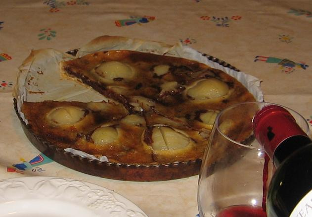

Recette n° 68 :
Tarte au chocolat fondant et aux poires

Ingrédients :
pour 8 personnes
La tarte se compose, de bas en haut, de la pâte à tarte,
d'une nappe de chocolat, des poires, d'une nappe de crème.
Les ingrédients sont les suivants :
- pour la pâte à tarte et les poires :
- une pâte feuilletée, ou
brisée, du commerce avec son papier sulfurisé
- une boîte de poires au sirop contenant 6
à 8 demi-poires
- pour faire la nappe de chocolat :
- une tablette de chocolat noir type Nestlé
pour dessert (200G)
- 100g de beurre ramolli
- 1/2 verre de lait
- pour faire la nappe de crème :
- 1 pot de 20 cl de crème fraîche
- 75 g de sucre en poudre
- 1 oeuf
- une poignée de cerneaux de noix ordinaires
ou de noix de pécan
Préparation :
- Préchauffer le
four à 200°C pendant 15 minutes
- Découper le chocolat en carrés, les mettre les
carrés dans une casserole, ajouter le beurre ramolli et le lait
- Mettre à fondre à deux doux en remuant sans cesse avec
une cuiller de bois, en ajoutant du lait si nécessaire,
jusqu'à obtenir une pâte lisse ; réserver
- Dans un mixer, mettre le sucre, l'oeuf et la crème ; battre
- Sortir les poires au sirop de la boîte, les étaler sur
du papier absorbant pour les égoutter
- Déballer la pâte feuilletée et laosez la
pâte avec son paier dans un moule à tarte
- La mettre à four maintenant chaud 3 à 4 minutes pur la
durcir un peu (la piquer à la fourchette pour q'elle ne gonfle
pas ; si elle gonfle, applatir les bosses)
- Etaler le chocolat fondu dans le fond de la tarte
- Disposez les 6 demi-poires
dans le fond de la tarte comme des pétales de fleurs
- Verser la crème entre les poires
- Mettre au four 50 à 55 minutes à 190°C
Observations :
- recette exécutée le 2 septembre 2006 à Quiberon
avec Andrée, Michel, F et moi
- très agréable pour les amateurs de chocolat